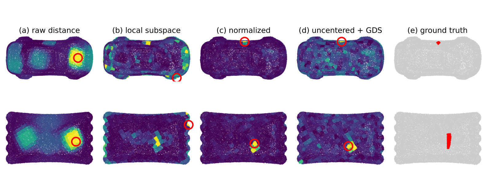

Abstract
This paper studies what subspace representations contribute to synthetic-to-real transfer in 3-D surface inspection, where models learn from synthetic defects and the only real data before deployment are scans of good parts. We use three classical constructions as instruments: the nearest-subspace classifier, one-class template subspaces and the generalized difference subspace (GDS). On 1,197 MVTec 3D-AD scans without target annotation we find that every decision rule ranks real defects at a similar window AUC, that image-level detection stays at chance, and that no rule keeps its in-domain threshold. We show that the margin of a nearest-subspace rule moves by at most the part of the feature shift outside its class subspaces, and that this leakage, measured from unlabeled good scans, bounds the displacement observed on unseen scans. On 597 Real3D-AD objects, a one-class subspace of registered templates evaluated at every location on frozen features reaches point AUROC 0.957 on pre-registered scans and a category-mean object AUROC of 78 to 81 with no training on the benchmark. Our results suggest that a subspace helps under shift in proportion to the shift it spans, and that in reference-based inspection the reference and its registration matter more than the subspace.
The subspace as a classifier
Encoders are trained on synthetic dents only: DentNet, a U-Net on residual height images, and PointNet++ on the same windows as point sets. Frozen DINOv2 serves as a foundation-model reference. Each decision rule is fitted on synthetic windows and applied unchanged to the 1,197 MVTec 3D-AD test scans, with no target annotation.
| Encoder | Rule | Window AUC | Pixel AUROC | Image AUROC | Good % | Shift (σ) |
|---|---|---|---|---|---|---|
| DentNet 1024-D | nearest subspace | 0.837 | 0.808 | 0.495 | 72 | +4.75 |
| nearest mean | 0.829 | 0.814 | 0.548 | 54 | +3.08 | |
| logistic | 0.837 | 0.808 | 0.514 | 99 | +14.90 | |
| GDS, R=5 | 0.823 | 0.818 | 0.534 | 77 | +2.71 | |
| DINOv2 1024-D | nearest subspace | 0.814 | 0.785 | 0.479 | 100 | +1.53 |
| nearest mean | 0.811 | 0.777 | 0.539 | 68 | +1.43 | |
| logistic | 0.825 | 0.794 | 0.513 | 100 | +2.96 | |
| GDS, R=1 | 0.805 | 0.774 | 0.526 | 81 | +1.09 |
The rules rank defects alike. They differ in how far the operating point moves. The nearest-subspace margin moves only with the part of the shift that leaves the class subspaces. That leakage can be measured on unlabeled good scans before deployment.

The subspace as a model of the good parts
On Real3D-AD a one-class subspace of registered templates is fitted at every location on frozen features. Nothing is trained on the benchmark.
| Method | 12 cat., max | 95% interval | |
|---|---|---|---|
| Reg3D-AD | published | 70.4 | |
| PO3AD | published | 76.6 | |
| Reg2Inv | published | 78.0 | |
| Template3D-AD | published | 84.4 | |
| PO3AD + AF3AD | published | 85.2 | |
| PointAD | zero-shot | 74.8 | |
| GS-CLIP | zero-shot | 76.4 | |
| Point-to-template distance, 2.5 mm | ours | 76.4 | |
| Local nominal subspace, DentNet, uncentered, GDS R=1, normalized | ours | 78.8 | [75.7, 82.0] |
| Local nominal subspace, PointNet++, uncentered, GDS R=1, normalized | ours | 81.0 | [77.8, 84.1] |
A centred local subspace on DentNet features reaches point AUROC 0.957 on the five pre-registered categories. Across the variants the reference and its registration move the result more than the choice of subspace does.
Code
The repository holds the full pipeline and the result files every number in the paper is read from, with a table that maps each result to its script. The trained DentNet weights are attached to the v1.0 release.
git clone https://github.com/Abdullah-Nasir-Chowdhury/subspace-surface-inspection ~/subspace-surface-inspection
cd ~/subspace-surface-inspection
pip install -r requirements.txt
bash accv_pipeline_mvtec/run_mvtec.sh # synthetic to MVTec 3D-ADGPL-3.0, inherited from the original DentNet by Lafiosca et al. MVTec 3D-AD and Real3D-AD are downloaded from their authors.
BibTeX
@inproceedings{chowdhury2026subspace,
title={Subspace Representations for Synthetic-to-Real Transfer in 3-D Surface Inspection},
author={Chowdhury, Abdulla Nasir and Ibrahim, Naish and Pratamasunu, Gulpi Qorik Oktagalu and Fukui, Kazuhiro},
booktitle={ACCV 2026 Workshop on Subspaces in the Era of Foundation Models},
year={2026},
eprint={2611.02744},
archivePrefix={arXiv},
doi={10.48550/arXiv.2611.02744}
}